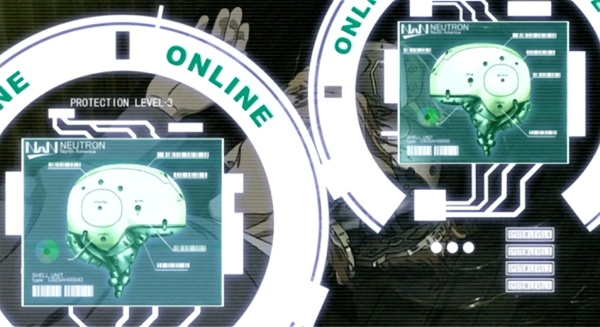

Finis les neuromats, le cyber-cerveau a révolutionné la cybernétique avec un principe simple mais aux applications incroyables. Les scientifiques ont réussi à numériser le cerveau et le dupliquer dans une neuropuce qui est la base du cyber-cerveau. Cette neuropuce est le centre d'un ordinateur avec une capacité de mémoire énorme, un module de transmission sans-fil de type cellulaire (parfois même satellite) qui permet au cerveau de l'homme moderne d'être constamment connecté sur le réseau mondial. Il peut communiquer en permanence avec le reste du monde et les autres individus. Rechercher une information est désormais trivial, tout comme s'interfacer avec une machine, ou communiquer avec les autres : à notre époque, environ les trois quarts de la population des pays industrialisé possèdent un cybercerveau. Le reste n'a soit pas les moyens, soit ne peut/veut intégrer la technologie pour des raisons philosophiques/religieuses/médicales. Le cyber-cerveau est scellé dans une capsule cranienne qui protège l'appareil contre les dégâts et les décharges électromagnétiques. Pour les cyber-cerveaux de classe B et A, qui nécessite un corps entièrement cybernétisé, le cerveau complet est encapsulé et protégé (et permet un transfert rapide de corps à corps).
Note : en fait, une fois le cerveau organique couplé au cyber-cerveau, il n'est plus nécessaire à 97%. Bizarrement, seuls quelques milliers de neurones suffisent à la rétention du "Ghost", seul élément de l'esprit qui sépare l'homme de la machine de nos jours (l'âme en termes religieux).
Le cyber-cerveau est doté des mêmes fonctions qu'un neuromat dans les règles de base de Cyberpunk et la plupart des options de ce dernier sont disponibles pour le cyber-cerveau (même prix, même coûts en Empathie). Tous les cyber-cerveaux ont un coût en Humanité de 1D6 (voir plus loin pour le coût financier).
Le cyber-cerveau inclut une prise d'interface (ou prise QRS) pour le branchement filaire au Net (ou un ordinateur, un smartgun, un véhicule, une armure motorisée, etc). D'autres prises plus spécialisées peuvent être achetées (voir les accessoires du neuromat). Avoir plusieurs prises permet de se connecter à plus haut débit au Net (très utile pour les hackers) ou de se connecter à plusieurs appareils/machines en même temps.
Note : le cyber-cerveau doit quand même être équipé d'un module de connexion spécifique pour être capable de s'interfacer à un type particulier de matériel (tout comme le neuromat). Certains systèmes avancés (tank, avions militaires) peuvent nécessiter plus d'une connexion simultanée entre le pilote et l'ordinateur de bord afin d'en contrôler les différents systèmes. Dans ce cas, le cyber-cerveau du pilote doit posséder une option connexion pour chacunes de ces connexions. C'est pour cela que les Panzerboys et DeltaJocks ont souvent plusieurs prises d'interface et modules de connexion pour leur cyber-cerveau.
Le cyber-cerveau peut utiliser des puces de mémoire/compétences. De par leur système de protection, ces puces doivent être branchées sur une des prises du cyber-cerveau pour être utiles, à moins d'être équipé de l'option Support de puces (ce qui permet d'avoir un port de connexion des puces autre que les prises).
Le cyber-cerveau est obligatoire pour toute conversion full-borg (corps 100% artificiel, de plus en plus courant dans les années 2050).
Bien que sécurisée et encryptée, toute la communication via un cyber-cerveau passe par le Net, et est donc interceptable, piratable par une IA, un netrunner ou des virus si l'on n'est pas correctement protégé. Bien sûr, tout cyber-cerveau est équipé d'un firewall et de défenses du Ghost très avancées mais aucun système de sécurité n'est impénétrable. Pour cette raison, un cyber-cerveau peut être mis en mode autiste à tout moment (désactivation de la communication avec l'extérieur via le sans-fil). En mode autiste, l'intrusion requière de se connecter par une des prises d'interface.
Un netrunner peut utiliser son cyber-cerveau pour attaquer des réseaux, des ordinateurs, des IAs mais aussi d'autres cyber-cerveaux afin de accéder/modifier/effacer leur mémoire, paralyser/tuer/changer les perceptions d'un individu ou d'une IA et autres applications. Ceci est bien entendu hautement illégal...
Un cyber-cerveau, de par sa mémoire interne, peut mémoriser les noms, lieux, et beaucoup d'autres informations de façon parfaite. Il est capable de d'effectuer un enregistrement complet des cinq sens et le rejouer plus tard. Par contre cela prend tellement de place que le temps d'enregistrement est limité selon le modèle. Cet enregistrement peut également être partagé avec d'autres individus (tout comme le braindance des années 20) ou envoyé vers un autre support, mais uniquement via un câble.
Il y a de dizaines de compagnies qui fabriquent des cyber-cerveaux mais ils peuvent être résumé en quatre classes.
Note : le bonus aux compétences décrit pour les cyber-cerveaux ne s'applique pas toujours. Il sous-entend une possibilité de recherche sur le Net pour assister une tâche, et donc ne s'appliquera pas pendant un combat en général, sauf si le joueur prend d'abord un round complet pour se connecter avant d'effectuer ladite action afin de trouver une information pertinente (au joueur d'être inventif).
Tous les cyber-cerveaux procurent un bonus de +4 à la compétence Bibliothèque pour la recherche de données.
En 2050, quasiment toutes les communications sont sans-fil : pourquoi s'encombrer d'un câble pour votre connexion superarme ? Pourquoi être attaché à un terminal pour accéder au Net ? Tous les cyber-cerveaux sont désormais équipés d'une connexion sans-fil qui leur permettent de se connecter au Net, à des vehicules, des armes, des engins lourds... plus besoin de se balader avec vos câbles, à moins que vous soyez un netrunner.
La connexion sans-fil des cyber-cerveaux permet également tous types de transmission des données (comme la voix ou tout autre forme de données qui peuvent être numérisées). La connexion spécialisée aux véhicules/armes/etc require, tout comme pour les connexions filaires, l'option appropriée et le cyber-cerveau peut se connecter simultanément à deux appareils par option installée. Ces options sont en fait des modules contenant tout l'électronique nécessaire à ces types de liaisons, comme la gestion de protocoles particuliers.
Les connexions sans-fil ont l'avantage d'être beaucoup plus discrètes que les câbles d'autrefois, mais ont le désavantage d'être piratables et brouillables. Elles ont beau être encodées et sécurisées au maximum, elles restent tout de même vulnérables aux attaques d'un bon netrunner. Imaginez ce qu'il pourrait faire s'il prenait le contrôle de votre voiture/moto/minigun. Avec un à vos côtés, les possibilités sont infinies...
En 2020, le commo mastoïdien était la solution la plus pratique pour communiquer dans un squad. Avec un cyber-cerveau, le moyen le plus pratique est de le faire directement via cybercomm en utilisant sa fonction sans-fil et en passant par le Net. La communication se déroule directement dans votre tête et vous pouvez de plus envoyer des données comme une capture de ce que vous voyez et entendez, ou tout autre type de données stockées dans votre cyber-cerveau ou une mémoire externe, tant que cela n'excède pas une certaine taille. Bien, qu'encore une fois, tous ces flux soient encryptés pour en assurer la sécurité, un très bon netrunner ou une IA peuvent contourner ce genre de désagrément. Toutefois, comme l'ensemble du processus se déroule dans votre tête, c'est parfaitement invisible et inaudible aux témoins autour de vous. En fait le cyber-cerveau a complètement remplacé le téléphone, les radios, les GPS, la télévision et la plupart des ordinateurs de bureau en 2040. Ces transmissions nécessite néanmoins la présence de points d'accès au Net. Toutes les villes du monde civilisé sont pratiquement couvertes en totalité, mais ce n'est pas le cas de zones plus désolées ou rurales.
C'est pour cette raison que la connexion sans-fil d'un cyber-cerveau peut être mise en mode "point d'accès" dans le cas ou l'accès au Net n'est pas disponible. Ainsi plusieurs cyber-cerveaux peuvent communiquer ad-hoc avec une portée en mode relais d'environ 100 mètres. Le protocole utilisé étant plus limité et basique, le firewall des cyber-cerveaux communiquant de cette façon gagne un bonus de +5.
Si vous êtes perdu en plein milieu du désert de Mojave, il est très probable que votre connexion sans-fil soit inutile, donc que vous perdiez également la faculté d'accéder au Réseau de cette façon. Il est néanmoins possible d'implanter une connexion satellite dans votre cyber-cerveau qui vous permettra d'y accéder d'à peu près partout (mais probablement pas d'un souterrain). Cet implant cybernétique interne nécessite une opération majeure et vous coûtera 5000 eb ainsi qu'1D6+2 points d'Humanité.
Un module externe moins onéreux permet également de rattacher votre cyber-cerveau via connexion satellite. Cette liaison satellite externe coûte 1000 eb et se branche via une prise d'interface (ou par connexion sans-fil). Elle permet donc de relayer le signal de votre cyber-cerveau (ou neuromat avec interface radio) grâce à une connexion satellite. Son poids est de 500g et sa taille celle d'un walkman avec une antenne rétractable. Une recharge dure environ 12 heures de connexion et transfert continus. Elle peut également être branchée à un commo mastoïdien ou tout autre radio afin d'envoyer le signal via satellite (après numérisation et encodage).
Utiliser un cyber-cerveau avec une connexion sans-fil limite la bande passante, ce qui engendre un malus de -5 pour les jets d'Interface et pour l'Initiative. Il est donc recommandé d'utiliser un câble d'interface et un terminal fixe pour les missions les plus difficiles. Par contre, avec le sans-fil, les chances de subir des dégâts sont plus faibles (l'électro-feedback direct ne fonctionne pas, mais l'ennemi peut suivre votre piste et infiltrer votre cyber-cerveau et votre Ghost, et vous endommager).
Par contre utiliser un cyber-cerveau avec plusieurs prises d'interface QRS donne un avantage certain au netrunner : +2 par câble QRS supplémentaire, jusqu'à concurrence de 4 câbles (bonus maximum de +6 donc). Par contre, utiliser plusieurs câbles augmente les dégâts considérablement lors d'une attaque par électro-feedback (chaque câble supplémentaire ajoute 1D6 points de dégâts).
Bonus prodigués par les cyber-cerveaux :